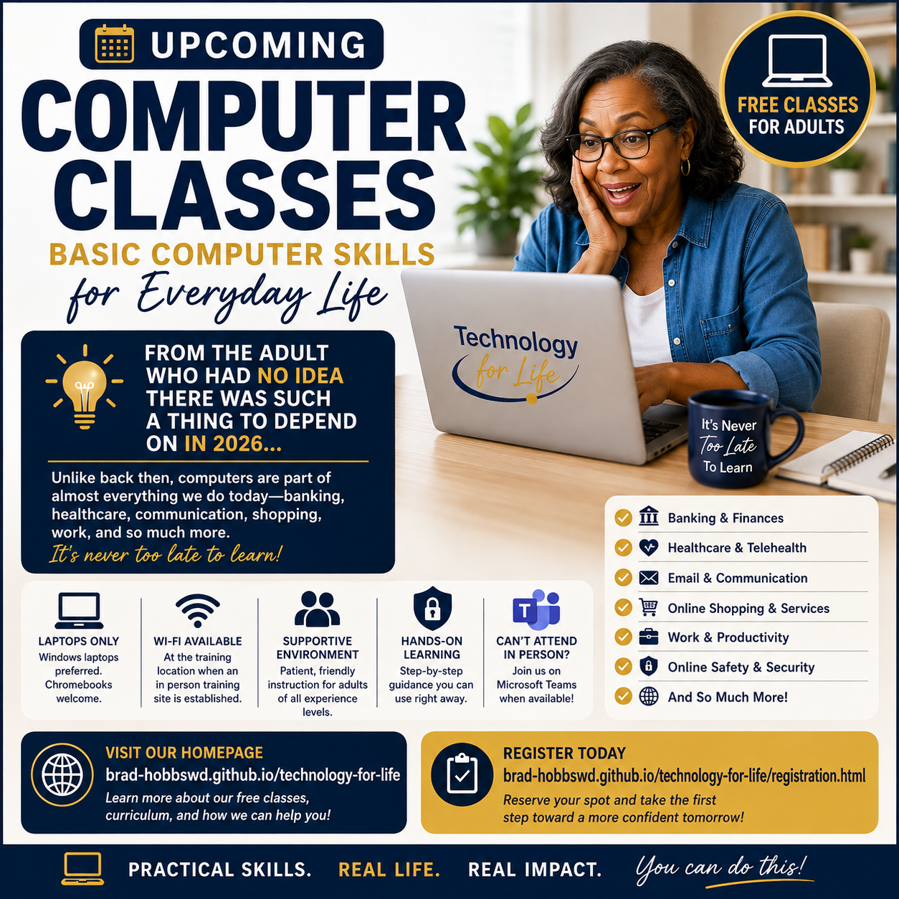

01
Understand
Learn what the computer, keyboard, mouse, desktop, windows, programs, files, and folders actually do.
FREE • BEGINNER FRIENDLY • ADULT LEARNING
Technology for Life helps middle aged adults, older adults, and beginners learn basic computer skills for everyday life. Build confidence using a laptop, email, the internet, files, and online safety in a patient, welcoming learning environment.

UPCOMING COMPUTER CLASSES
Whether you are in midlife, retired, or simply ready to learn, you do not need previous computer experience. Our beginner computer classes help adults practice practical skills, understand the technology used in daily life, and feel more confident online.
Register for ClassesWELCOME
Technology may have changed quickly, but learning does not have an expiration date. Whether you remember a time before computers were part of everyday life or you simply never had the opportunity to learn, you belong here.
Our classes are designed for adults of all ages. We move at the pace of the learners, provide hands on practice, and make room for questions, repetition, and individual assistance.
PHASE ONE
Phase One focuses on laptop computers. Windows laptops are the primary platform for instruction, and Chromebooks are also welcome. Mac laptops may be used, but Mac specific instruction is more limited. All classes are held online through Microsoft Teams. A physical class location is not available. Learners must download and install the Microsoft Teams app before class. Windows laptops are the primary platform, Chromebooks are welcome, and desktop computers may be used to join online class. Mac specific instruction is more limited.
Learn what the computer, keyboard, mouse, desktop, windows, programs, files, and folders actually do.
Bring your own Windows laptop or Chromebook and practice each skill on the computer you will use at home.
Develop practical skills for everyday computer use while learning how to recognize and solve common problems.
WHAT TO EXPECT
Each meeting lasts two hours. A typical learning session is planned for at least six weeks, meeting one day each week. This is a minimum framework. Some studies may take less time, while hands on studies may require additional weeks for practice, repetition, troubleshooting, and individual support.
Active learner participation is required. Every learner is expected to attend, pay attention, practice the skills being taught, ask questions when something is unclear, make a genuine effort to learn, and contribute positively to the classroom environment.
Classes are free. Financial donations are welcome when a learner is able and chooses to give, but donating money is never required for registration, attendance, or participation.
See the full schedule formatWHO THESE CLASSES ARE FOR
Technology for Life welcomes middle aged adults, older adults, retirees, and anyone who missed the chance to learn computer skills earlier in life. You do not need to feel embarrassed about starting with the basics. We begin with the essentials, explain unfamiliar terms in plain language, and make time for questions and repeated practice.
Whether your goal is to send an email, search the web, organize files, join an online meeting, or better understand online scams, learning one skill at a time can make everyday technology feel more manageable.
Explore basic computer skillsPRACTICAL DIGITAL SKILLS
Beginner computer lessons focus on useful tasks, with hands on practice and support as you learn.
Learn the keyboard, mouse or touchpad, desktop, windows, apps, files, and folders.
Build familiarity with web searches, websites, email messages, attachments, and online communication.
Practice recognizing suspicious messages, scam attempts, unsafe links, and requests for personal information.
OUR PROMISE
“There are no stupid questions here.”
If something needs to be explained three times, we explain it three times. If it needs to be practiced ten times, we practice it ten times. Learning is not a race.
The goal is simple: I can do this.